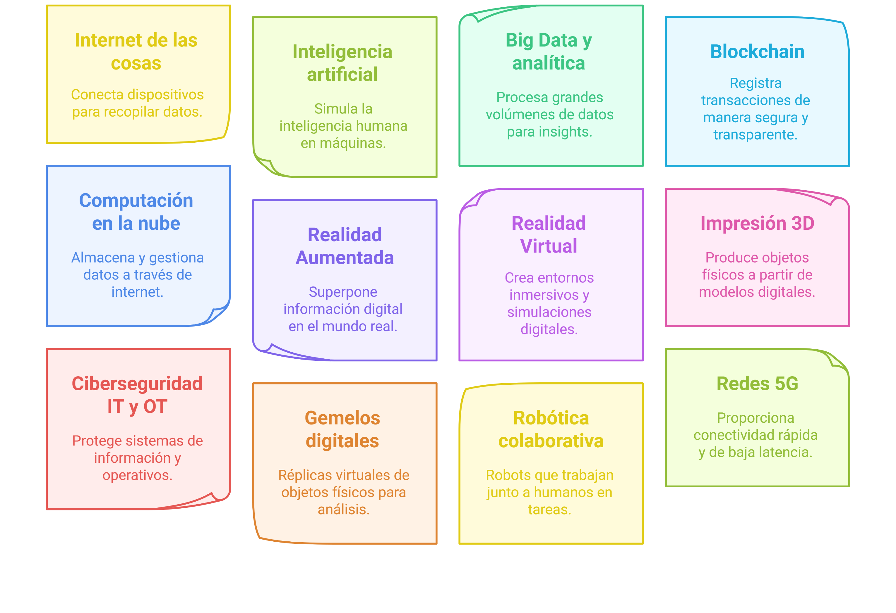
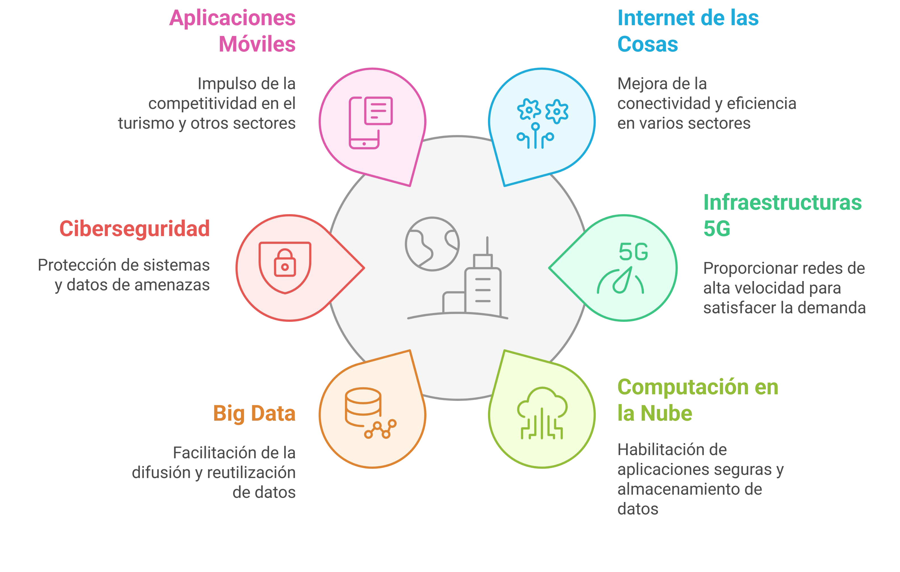
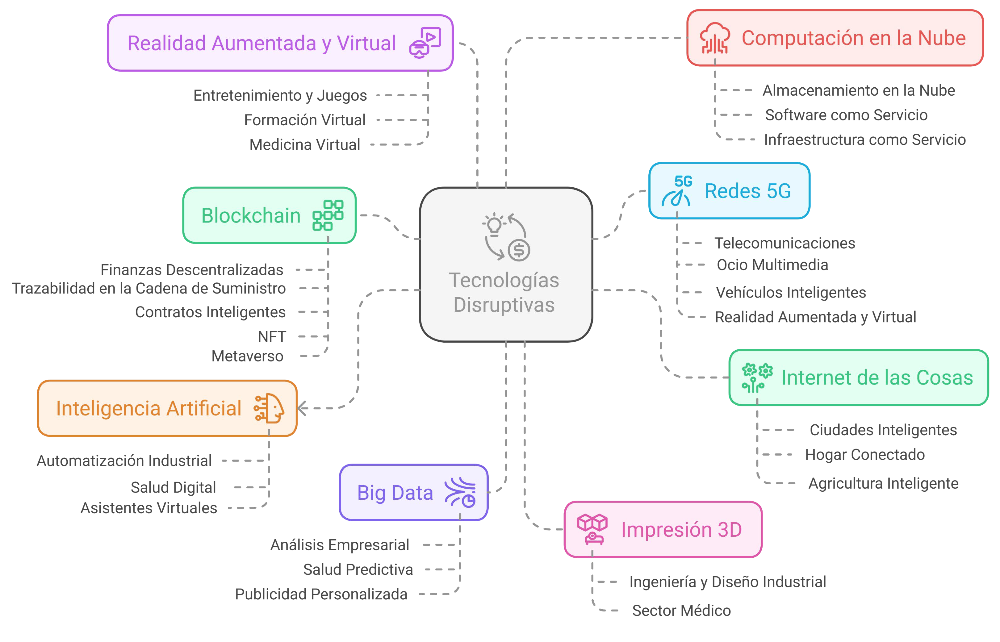

Apuntes
Descargar estos apuntes
Índice
Resultados de aprendizaje y criterios de evaluación
- RA4. Compara los sistemas de producción/prestación de servicios digitalizados con los
sistemas clásicos identificando las mejoras introducidas.
- Criterios de evaluación:
a) Se han identificado las tecnologías habilitadoras (THD) actuales que definen un sistema digitalizado.
b) Se han descrito las características y aplicaciones del IoT, IA (Inteligencia Artificial), Big Data, tecnología 5G, la robótica colaborativa, Blockchain, Ciberseguridad, fabricación aditiva, realidad virtual, gemelos digitales, entre otras.
c) Se ha descrito la contribución de las THD a la mejora de la productividad y la eficiencia de los sistemas productivos o de prestación de servicios.
d) Se ha relacionado la alineación entre las unidades funcionales de las empresas que conforman el sistema y el objetivo del mismo.
e) Se ha relacionado la implantación de las tecnologías habilitadoras (sensórica, tratamiento de datos, automatización y comunicaciones, entre otras) con la reducción de costes y la mejora de la competitividad.
f) Se han relacionado las tecnologías disruptivas con aplicaciones concretas en los sectores productivos.
g) Se han definido los sistemas de almacenamiento de datos no convencionales y el acceso a los mismos desde cada unidad.
h) Se han descrito las mejoras producidas en el sistema y en cada una de sus etapas.
Contenidos
- Principales tecnologías habilitadoras: IoT, IA (Inteligencia Artificial), Big Data, tecnología 5G, la robótica colaborativa, Blockchain, Ciberseguridad, fabricación aditiva, realidad virtual, gemelos digitales: concepto y características de cada una de ellas.
- Ventajas de la incorporación de las THD en el sistema productivo. Productividad y sostenibilidad: interrelaciones.
- Eficiencia en el sistema productivo mediante la aplicación de tecnología al mismo: reducción costes y mejora productividad relacionados con la sensórica, tratamiento de datos, automatización y comunicaciones, entre otros
- Sistemas digitalizados reales. Ejemplos. Sistemas de almacenamiento de datos no convencionales.
Introducción
Las tecnologías habilitadoras digitales (THD) son herramientas y sistemas que permiten la digitalización de procesos y la creación de nuevos modelos de negocio. Estas tecnologías son fundamentales para la transformación digital de las empresas y su adaptación a un entorno empresarial cada vez más competitivo y globalizado.
La digitalización ha revolucionado la forma en que se producen bienes y se prestan servicios. La incorporación de Tecnologías Habilitadoras Digitales (THD) ha permitido mejorar la productividad, reducir costes y aumentar la eficiencia de los sistemas productivos.
Los sistemas de producción digitalizados son aquellos que utilizan tecnologías habilitadoras digitales para mejorar la eficiencia y la productividad de los procesos productivos. Estas tecnologías habilitadoras digitales son las que permiten la digitalización de los procesos productivos y la creación de sistemas de producción digitalizados.
Principales tecnologías habilitadoras
Las empresas están adoptando tecnologías habilitadoras digitales para mejorar su competitividad y adaptarse a un entorno empresarial en constante cambio. Estas tecnologías permiten la automatización de procesos, la recopilación y análisis de datos en tiempo real, y la mejora de la comunicación y colaboración entre diferentes áreas de la empresa.
Algunas de las tecnologías habilitadoras digitales actuales más importantes son:
- Internet de las Cosas (IoT): Permite la conexión de dispositivos a través de la red para recopilar, compartir y analizar datos en tiempo real. Se aplica en sectores como la manufactura, la sanidad, la logística y la agricultura de precisión.
- Inteligencia Artificial (IA): Capacidad de las máquinas para aprender y tomar decisiones autónomas. Su uso se extiende a la automatización industrial, chatbots, sistemas de recomendación y diagnósticos médicos.
- Big Data: Procesamiento de grandes volúmenes de datos para la toma de decisiones estratégicas. Aborda la recolección, almacenamiento y análisis de datos masivos, permitiendo identificar patrones y tendencias. Aplicado en marketing, salud, finanzas e industria.
- Tecnología 5G: Comunicaciones rápidas y de baja latencia para la industria y los servicios, permitiendo la conexión de dispositivos IoT de forma más eficiente.
- Robótica colaborativa: Interacción entre robots y humanos en entornos de producción, aumentando la eficiencia y seguridad.
- Blockchain: Sistema seguro y descentralizado de almacenamiento y verificación de datos, utilizado en trazabilidad de productos, contratos inteligentes y seguridad financiera.
- Ciberseguridad: Protección de los sistemas digitales ante amenazas informáticas, clave en la seguridad de datos industriales y empresariales.
- Fabricación aditiva: Impresión 3D para el desarrollo de prototipos y productos personalizados, revolucionando la manufactura.
- Realidad Virtual: Simulación de entornos digitales, a menudo a través de gafas de realidad virtual. Este entorno puede ser completamente ficticio o una representación del mundo real. Utilizada en formación, diseño y marketing, mejorando la experiencia del usuario.
- Realidad Aumentada: Mejora la experiencia del usuario al superponer información digital en el mundo real. Utilizada en formación, mantenimiento y marketing.
- Gemelos Digitales: crea representaciones virtuales de objetos físicos, permitiendo simulaciones y análisis en tiempo real. Se aplica en la industria para optimizar procesos y mantenimiento predictivo.
- Impresión 3D: Fabricación aditiva que permite crear objetos tridimensionales a partir de modelos digitales, revolucionando la producción y personalización de productos.
- Computación en la nube: Acceso a recursos informáticos a través de Internet, permitiendo el almacenamiento, procesamiento de datos y aplicaciones sin necesidad de infraestructura local. Facilitan la escalabilidad, flexibilidad y acceso bajo demanda de los sistemas.
- Redes 5G: Conectividad de alta velocidad y baja latencia, habilitando la comunicación entre dispositivos IoT y mejorando la eficiencia en la transmisión de datos.
- Ciberseguridad: Protección de sistemas de información y operativos ante ciberamenazas, garantizando la integridad y disponibilidad de los datos.

Contribución de las THD a la mejora de la productividad y la eficiencia.
Las tecnologías habilitadoras digitales (THD) han transformado la forma en que las empresas operan, permitiendo una mejora significativa en la productividad y eficiencia de los sistemas productivos. A continuación, se describen algunas de las contribuciones más relevantes:
- Automatización de procesos: La implementación de tecnologías como la robótica colaborativa y la inteligencia artificial permite la automatización de tareas repetitivas, reduciendo el tiempo y los errores humanos en la producción. Un ejemplo de ellos en el campo de la informática la automatización de procesos de desarrollo de software, lo que mejora considerablemente la productividad y reduce los tiempos de entrega.
- Análisis de datos en tiempo real: El uso de Big Data y IoT permite recopilar y analizar grandes volúmenes de datos en tiempo real, lo que facilita la toma de decisiones informadas, la optimización de procesos y la predicción de tendencias. Un ejemplo de ello es el uso de sensores en la industria para monitorizar el rendimiento de las máquinas y predecir fallos antes de que ocurran.
- Mejora en la calidad del producto: La monitorización constante de los procesos mediante sensores y tecnologías de análisis permite detectar y corregir problemas de calidad de manera inmediata, reduciendo el desperdicio y mejorando la satisfacción del cliente. Un ejemplo de ello es el uso de tecnologías de visión artificial para inspeccionar productos en la línea de producción.
- Gestión de la cadena de suministro: La digitalización de la cadena de suministro permite una mejor coordinación entre proveedores, fabricantes y distribuidores, optimizando los tiempos de entrega y reduciendo costes. Un ejemplo de ello es el uso de plataformas digitales para gestionar inventarios y pedidos en tiempo real.
- Flexibilidad y personalización: La digitalización permite una mayor flexibilidad en la producción, adaptándose rápidamente a las demandas del mercado y ofreciendo productos personalizados a los clientes. Un ejemplo de ello es la fabricación aditiva, que permite crear productos a medida sin necesidad de grandes inversiones en maquinaria.
- Innovación continua: La digitalización fomenta la innovación al permitir la experimentación y el desarrollo de nuevos productos y servicios, adaptándose a las necesidades cambiantes del mercado. Un ejemplo de ello es el uso de tecnologías de realidad aumentada para crear experiencias interactivas en el marketing y la venta de productos.
- Mejora en la colaboración y comunicación: Las tecnologías digitales facilitan la comunicación y colaboración entre diferentes áreas de la empresa, mejorando la coordinación y el trabajo en equipo. Un ejemplo de ello es el uso de herramientas de colaboración en línea que permiten a los equipos trabajar juntos en proyectos, independientemente de su ubicación geográfica.
- Sostenibilidad: La digitalización permite una gestión más eficiente de los recursos, reduciendo el consumo de energía y materiales, y minimizando el impacto ambiental. Un ejemplo de ello es el uso de tecnologías de monitorización energética para optimizar el consumo en edificios e instalaciones industriales.
- Ciberseguridad: La implementación de medidas de ciberseguridad garantiza la protección de los datos y sistemas digitales, lo que es fundamental para mantener la confianza de los clientes y la integridad de la información. Un ejemplo de ello es el uso de tecnologías de encriptación para proteger la información sensible en transacciones financieras.
En resumen, las tecnologías habilitadoras digitales han revolucionado la forma en que las empresas operan, permitiendo una mejora significativa en la productividad y eficiencia de los sistemas productivos.

Productividad y sostenibilidad: interrelaciones.
La productividad y la sostenibilidad son dos conceptos interrelacionados en el contexto de la digitalización y la adopción de tecnologías habilitadoras digitales (THD). A medida que las empresas buscan mejorar su productividad, también deben considerar el impacto ambiental y social de sus operaciones. La digitalización ofrece oportunidades para lograr un equilibrio entre ambos aspectos.
La productividad se refiere a la eficiencia con la que se utilizan los recursos para producir bienes y servicios. La sostenibilidad, por otro lado, implica la capacidad de operar de manera responsable y ética, minimizando el impacto ambiental y promoviendo el bienestar social.
Reducción de costes y mejora de la competitividad
La implantación de tecnologías habilitadoras digitales (THD) en los sistemas productivos no solo mejora la productividad y eficiencia, sino que también contribuye a la reducción de costes y mejora de la competitividad. A continuación, se describen algunas de las formas en que las THD logran estos objetivos:
- Sensores y monitorización: La implementación de sensores IoT permite la monitorización constante de los procesos productivos, lo que ayuda a identificar ineficiencias y áreas de mejora. Esto se traduce en una reducción de costes operativos al optimizar el uso de recursos y minimizar el desperdicio.
- Tratamiento de datos: El análisis de grandes volúmenes de datos (Big Data) permite a las empresas tomar decisiones informadas basadas en datos concretos, lo que reduce el riesgo de errores y mejora la planificación. Esto se traduce en una reducción de costes al evitar inversiones innecesarias y optimizar la asignación de recursos.
- Automatización: La automatización de procesos mediante robótica y sistemas inteligentes reduce la dependencia de mano de obra humana, lo que disminuye los costes laborales y mejora la eficiencia. Esto permite a las empresas ser más competitivas al reducir sus costes operativos y aumentar su capacidad de producción.
- Comunicaciones: La tecnología 5G y otras soluciones de conectividad mejoran la comunicación entre dispositivos y sistemas, lo que permite una respuesta más rápida a las demandas del mercado. Esto se traduce en una mejora de la competitividad al permitir a las empresas adaptarse rápidamente a los cambios en la demanda y ofrecer un mejor servicio al cliente.
En conclusión, la implantación de tecnologías habilitadoras digitales en los sistemas productivos contribuye a la reducción de costes y mejora de la competitividad al optimizar procesos, mejorar la toma de decisiones y aumentar la eficiencia operativa. Las empresas que adoptan estas tecnologías están mejor posicionadas para enfrentar los desafíos del mercado actual y aprovechar las oportunidades que surgen en un entorno empresarial en constante evolución.
Tecnologías acorde a los objetivos de la empresa y sus departamentos
Otro aspecto importante es la alineación entre los departamentos de las empresas y su objetivo. La digitalización permite una mejor comunicación y colaboración entre diferentes áreas de la empresa, lo que facilita la alineación de objetivos y mejora la eficiencia en la ejecución de estrategias empresariales. Cada departamento colabora a los objetivos globales de la empresa, y tiene sus propios objetivos alineados con los de la empresa.
Para cada objetivo, es posible que se necesiten diferentes tecnologías habilitadoras. Por ejemplo, si el objetivo es mejorar la atención al cliente, se pueden utilizar tecnologías como chatbots y sistemas de gestión de relaciones con clientes (CRM) para optimizar la comunicación y el servicio al cliente. Si el objetivo es aumentar la eficiencia operativa, se pueden implementar tecnologías de automatización y análisis de datos para optimizar los procesos internos.
La implantación de las tecnologías habilitadoras digitales debe ser un proceso planificado y alineado con los objetivos estratégicos de la empresa. Esto implica identificar las áreas de mejora, seleccionar las tecnologías adecuadas y establecer un plan de implementación que contemple la formación del personal y la adaptación de los procesos.
Tecnologías disruptivas y sus aplicaciones en los sectores productivos
Las tecnologías disruptivas son aquellas que transforman radicalmente la forma en que se producen bienes y se prestan servicios. Estas tecnologías tienen un impacto significativo en los sectores productivos, permitiendo la creación de nuevos modelos de negocio y la mejora de la eficiencia operativa. A continuación, se describen algunas de las tecnologías disruptivas más relevantes y sus aplicaciones en diferentes sectores:
- Inteligencia Artificial (IA): La IA se utiliza en diversos sectores para automatizar procesos, mejorar la toma de decisiones y personalizar la experiencia del cliente.
- En el sector financiero, por ejemplo, se utilizan algoritmos de IA para detectar fraudes y analizar riesgos crediticios. En el sector salud, la IA se aplica en diagnósticos médicos y análisis de imágenes.
- En el sector de la salud, se utiliza para el diagnóstico de enfermedades y la personalización de tratamientos.
- En automoción, se aplica en vehículos autónomos y sistemas de asistencia al conductor.
- Blockchain: Esta tecnología se utiliza para garantizar la seguridad y transparencia en las transacciones.
- En el sector logístico, se aplica para rastrear la cadena de suministro y garantizar la autenticidad de los productos.
- En el sector financiero, se utiliza para realizar transacciones seguras y rápidas sin intermediarios.
- Impresión 3D: La fabricación aditiva permite la producción de objetos tridimensionales a partir de modelos digitales.
- En el sector industrial, se utiliza para crear prototipos y piezas personalizadas, reduciendo los tiempos de producción y los costes.
- En el sector médico, se aplica en la creación de prótesis y modelos anatómicos personalizados.
- Internet de las Cosas (IoT): La conectividad de dispositivos permite la recopilación y análisis de datos en tiempo real.
- En el sector agrícola, se utilizan sensores IoT para monitorizar el estado de los cultivos y optimizar el riego.
- En la industria, se aplica en la monitorización de maquinaria y la gestión de inventarios.
- Realidad Virtual (RV): La RV se utiliza para crear entornos virtuales inmersivos.
- En el sector educativo, se aplica en la formación de profesionales mediante simulaciones realistas.
- En el sector del entretenimiento, se utiliza para crear experiencias interactivas y videojuegos.
- Realidad Aumentada (RA): La RA superpone información digital en el mundo real.
- En el sector retail, se utiliza para mejorar la experiencia de compra al permitir a los clientes visualizar productos en su entorno antes de comprarlos.
- En el sector turístico, se aplica para ofrecer información adicional sobre lugares y monumentos mediante dispositivos móviles.
- Robótica colaborativa: La robótica colaborativa permite la interacción entre robots y humanos en entornos de producción.
- En la industria manufacturera, se utilizan robots colaborativos para realizar tareas repetitivas y peligrosas, lo que mejora la seguridad y eficiencia en el trabajo.
Aquí podemos ver sólamente algunas de las aplicaciones de las tecnologías disruptivas en los sectores productivos. La digitalización y la adopción de estas tecnologías están transformando la forma en que las empresas operan, permitiendo una mejora significativa en la productividad, eficiencia y competitividad.

Sistemas de almacenamiento de datos no convencionales
Los sistemas de almacenamiento de datos no convencionales son aquellos que utilizan tecnologías innovadoras para almacenar y gestionar grandes volúmenes de datos. Estos sistemas son fundamentales en la era de la digitalización, ya que permiten el acceso rápido y eficiente a la información necesaria para la toma de decisiones. Algunos ejemplos de sistemas de almacenamiento no convencionales son:
- Almacenamiento en la nube: Permite el acceso a datos y aplicaciones a través de Internet, eliminando la necesidad de infraestructura local. Proveedores como Amazon Web Services (AWS), Microsoft Azure y Google Cloud ofrecen soluciones escalables y flexibles.
- Almacenamiento en dispositivos de red (NAS): Dispositivos conectados a la red local que permiten el almacenamiento y acceso compartido de datos. Son ideales para pequeñas y medianas empresas que buscan una solución de almacenamiento centralizada.
- Almacenamiento en sistemas distribuidos: Utilizan múltiples servidores para almacenar y gestionar datos, mejorando la disponibilidad y redundancia. Ejemplos incluyen Hadoop Distributed File System (HDFS) y Apache Cassandra.
- Almacenamiento en sistemas de archivos descentralizados: Utilizan tecnologías de blockchain para almacenar datos de manera segura y transparente. Estos sistemas son ideales para aplicaciones que requieren alta seguridad y trazabilidad, como la gestión de la cadena de suministro. Utilizan tecnologías como Blockchain para garantizar la integridad y seguridad de los datos almacenados.
- Almacenamietno definido por software (SDS): Utiliza software para gestionar y optimizar el almacenamiento, permitiendo una mayor flexibilidad y escalabilidad. Ejemplos incluyen Ceph y VMware vSAN.
Sistemas digitalizados reales. Ejemplos.
Hoy en día, existen numerosos ejemplos de sistemas digitalizados en diferentes sectores productivos. Estos sistemas utilizan tecnologías habilitadoras digitales para mejorar la eficiencia, la productividad y la sostenibilidad. Algunos ejemplos son:
- Industria 4.0: La digitalización de la industria ha dado lugar a fábricas inteligentes que utilizan IoT, Big Data y robótica colaborativa para optimizar la producción. Un ejemplo es la planta de BMW en Leipzig, que utiliza tecnologías avanzadas para mejorar la eficiencia y reducir el tiempo de producción.
- Agricultura de precisión: La utilización de sensores IoT y drones permite monitorizar el estado de los cultivos y optimizar el uso de recursos como agua y fertilizantes. Un ejemplo es la empresa española AgroSmart, que utiliza tecnología IoT para mejorar la gestión agrícola.
- Logística y transporte: La digitalización de la cadena de suministro permite una mejor coordinación entre proveedores, fabricantes y distribuidores. Un ejemplo es Amazon, que utiliza tecnologías avanzadas para gestionar su red logística y optimizar la entrega de productos.
- Salud digital: La telemedicina y el uso de dispositivos wearables permiten monitorizar la salud de los pacientes en tiempo real. Un ejemplo es la plataforma de salud digital de Philips, que utiliza IoT y Big Data para mejorar la atención médica.
Bibliografía